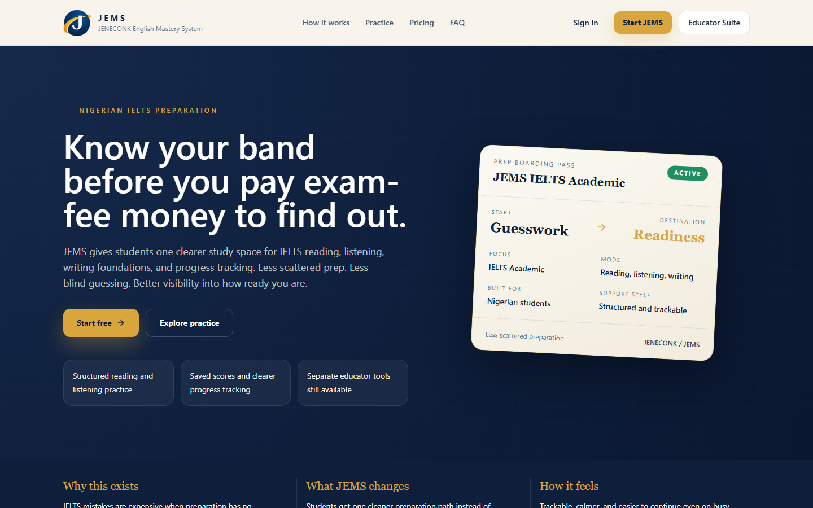

Strategy and comprehension
Academic passages, skimming, scanning, inference, paraphrase recognition, matching headings, completion tasks and timing.
JENECONK English Mastery System
JEMS is a structured learning system that helps learners understand their weaknesses, practise what matters and prepare confidently for high-stakes English examinations. IELTS Academic is the active first pathway.
JEMS currently opens on its live Vercel address. The planned product address is english.jeneconk.com.

A deliberate learning cycle
JEMS connects each assessment result to evidence about a learner's competency. The path is simple: learn a concept, assess understanding, diagnose the weakness, complete targeted practice and reassess to measure improvement.
IELTS Academic
Academic passages, skimming, scanning, inference, paraphrase recognition, matching headings, completion tasks and timing.
Conversations, discussions, lectures, multiple accents, corrections, distractors, maps, numbers, dates and spelling.
Task 1 graphs, charts, tables, maps and processes; Task 2 essays; vocabulary, grammar, structure and teacher review.
Practice for all three speaking parts, including cue cards, discussion, response development, vocabulary and pronunciation.
The JEMS difference
A score alone does not explain what to study next. JEMS is being designed to connect wrong answers to weak competencies and recurring patterns, then recommend a focused remediation path.
For example, a learner who repeatedly treats missing information as a contradiction in True / False / Not Given questions needs more than another full practice test. A focused concept lesson and targeted drill can address the misunderstanding before reassessment.
This example describes intended system behaviour and does not promise a particular examination result.Human feedback
JEMS does not position AI as a replacement for qualified teachers. Automated systems support repetition, objective marking, progress tracking and pattern recognition. Human teachers remain important for judgement, detailed writing and speaking feedback, strategy, accountability and targeted intervention.
For institutions
Planned institutional features include learner groups, teacher oversight, assigned assessments, writing and speaking review workflows, progress monitoring and cohort analytics. These features should be discussed with JENECONK before being treated as available.
Questions and answers
JEMS stands for JENECONK English Mastery System, a structured English-learning and examination-preparation platform developed by JENECONK Integrated Global Solutions Limited.
No. JEMS is an independent preparation platform. IELTS is a registered trademark of its respective owners, and JEMS materials are not presented as official IELTS examination content.
No learning platform can guarantee an examination result. JEMS can provide structure, diagnostics, practice and feedback, but outcomes depend on the learner's effort, starting level and examination performance.
Yes. The current pathway addresses Reading, Listening, Writing and Speaking, with human feedback particularly important for nuanced writing and speaking performance.
IELTS Academic is the active focus. IELTS General Training, TOEFL, PTE Academic, OET, Business English and General English are planned pathways, not live features.
Build the skills behind the score